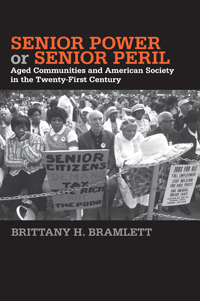

Shows how the increasing number of aged communities in the United States shapes the local political context for residents of all ages
Shows how the increasing number of aged communities in the United States shapes the local political context for residents of all ages


 Shows how the increasing number of aged communities in the United States shapes the local political context for residents of all ages
Shows how the increasing number of aged communities in the United States shapes the local political context for residents of all ages

|  |
Senior Power or Senior PerilAged Communities and American Society in the Twenty-First CenturyBrittany H. Bramlettpaper EAN: 978-1-43991-134-1 (ISBN: 1-4399-1134-7) |
"Social scientists are just beginning to scratch the surface of the role that social context plays in conditioning political behavior. In Senior Power or Senior Peril, Bramlett gives a convincing account of the social context of one of the most active and participatory subgroups in American society. This refreshingly thoughtful and exceptionally well-written treatment of age from a contextual perspective uses appropriate data and methods to test an interesting question. Senior Power or Senior Peril is an excellent book that makes an important contribution to the literature."
—Joshua Dyck, Associate Professor of Political Science and Co-director of the Center for Public Opinion at the University of Massachusetts, Lowell
As the Baby Boomer generation ages, the number of senior citizens as a proportion of the overall electorate will reach record numbers. This reality prompted Brittany Bramlett to ask the question �When senior citizens make up a large proportion of the local population, are they politically more powerful or more powerless?�
In Senior Power or Senior Peril, Bramlett investigates whether communities with increasing numbers of older adults across the United States form a growing bloc of senior power that will promote the redistribution of particularized welfare benefits to older adults at the expense of younger people or whether political influence actually declines with old age. Bramlett uses interviews and on-site research at various senior communities to explore the qualities that make an aged community politically unique and the impact of the local aged context on residents' political knowledge, safety-net policy attitudes, efficacy, and political activity.
This path-breaking book identifies the political behaviors, attitudes, and consciousness of both older and younger residents as it explores the perceived and actual political power of seniors.
Excerpt available at www.temple.edu/tempress
"Bramlett employs social science techniques to explore the empirical prevalence of two phenomena that have become journalistic tropes: 'senior power' and 'senior peril.'... The book contributes some modest additional findings to a topic sure to be of increasing importance in American politics in coming years. Summing Up: Highly Recommended."
—CHOICE
Acknowledgments
1. Introduction
2. Aged Communities
3. What Makes an Aged Community?
4. Conserving Political Knowledge
5. Unconventional Attitudes
6. Powerful or Powerless?
7. Participation or Retreatism?
8. Conclusion
Appendix: Supplemental Tables for Chapters 4, 5, and 6
Notes
References
Index
Brittany H. Bramlett is currently a Post-doctoral Honors Teaching Fellow with the Department of Political Science at the University of Georgia. Previously, she was an Assistant Professor of Political Science at Albright College in Reading, Pennsylvania.
Political Science and Public Policy
Aging
Social Logic of Politics, edited by Scott D. McClurg.
The Social Logic of Politics Series, edited by Scott D. McClurg (formerly edited by Alan S. Zuckerman), directs attention to several related clusters of research in the social sciences. At the core is a theoretical principle: individuals make political decisions, like other choices, by taking into account cues from other persons. Studies move from individuals to groups to large scale collectivities. Usually examining micro-politics-voting and other forms of political participation; the place of politics in households, the family, the friendship unit, and the neighborhood- this research also studies how broader political and social contexts influence and are influenced by these micro-processes. It includes as well "small group behavior" in political institutions, such as exchanges of cues in legislatures and patron-client relations in bureaucratic agencies and political parties. Books in The Social Logic of Politics Series will apply research techniques that run the gamut of contemporary political science, sociology, communications, and geography.
© 2015 Temple University. All Rights Reserved. This page: http://www.temple.edu/tempress/titles/2321_reg.html.